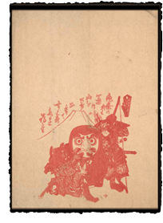
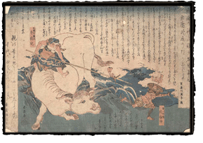
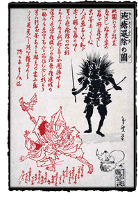

|
Contagious Disease
Page 2 of 3
An anonymous hōsō-e in the collection represents another interesting variation on this theme. At center is a life-sized red Daruma toy, supported on either side by a warrior: to the left is Shōki, recognizable through his Chinese-style costume; and on the right is the archer Tametomo. The toy, with its rounded bottom and distinctive red-hooded head, is derived from the famous Zen patriarch Daruma (Skt. Bodhidharma, active 6th c.). An Indian monk who brought the precepts of Chan (Zen) Buddhism to China, Daruma famously spent so long in seated meditation that his legs atrophied, and his eyelids fell away — hence the doll's unblinking gaze. That the dolls return to their upright position after being tilted symbolizes the qualities of determination and steadfastness, embodied in Bodhidharma's story. The combined attributes of a red robe and watchful gaze may have led Daruma to be regarded as one who could be called upon to protect children against smallpox. Behind the trio in this hōsō-e is a simple linear rendering of Mt. Fuji's conical peak. Japan's foremost sacred mountain, Mt. Fuji was also deemed a protective hōsōgami. Popular saying likened the raised form of a smallpox scab — a sign of imminent recovery — to the mountain's characteristic shape.
The two previous examples were produced before 1849, when the smallpox vaccine was introduced into Japan. Several smallpox handbills, or hikifuda, preserved in the UCSF collection suggest how woodblock prints were used in the campaign to encourage people to replace their folk beliefs with confidence in a scientifically proven means of avoiding the disease. Prints such as these were distributed as a means of addressing recurring doubts about the vaccine's safety. Cow-related imagery is prevalent in the handbills as part of a response to fears that since the first vaccines employed a strain of cowpox, people might somehow be transformed into cows if they agreed to be vaccinated. By the mid-Meiji period, vaccination was widespread, by virtue of governmental decree. However, a late nineteenth-century hōsō-e suggests that despite these efforts, earlier faith in the power of folk deities was not completely eradicated. Dated to 1890, the print shows a pair of figures heavily dotted with red pockmarks running from an angry looking black demon equipped with a bow and arrow. Titled "Suppression of Smallpox" (Hōsō taiji no zu), the print bears an inscription (in red) explaining that the artist saw a similar picture in an old collector's home and was told that it protected against smallpox; thinking it might help prevent an epidemic, he recreated it for his print publisher. In other words, "modern" Japanese knew that this sort of talisman was outdated -- a relic of the past – but might still hedge his bets by employing one of the charms if the need arose. Measles
Behind the figures appears an image of Mt. Fuji, again associated with the ability to prevent or cure pox-like diseases. The accompanying text offers a tale about measles, and a useful list of "do's and don'ts" divided into beneficial foods (kanpyo, or dried gourd, sweet potatoes, and so on) and things to avoid (both bathing and eating soba were to be avoided for 75 days!).
|
|||